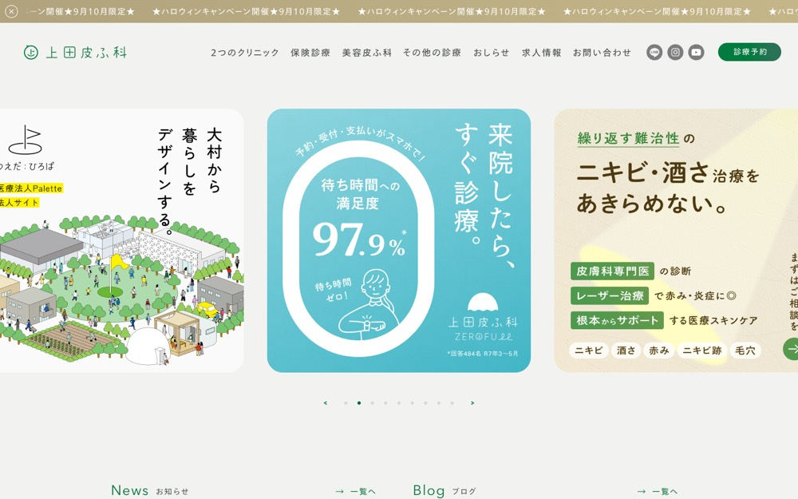

長崎県大村市の皮膚科・小児皮膚科・美容皮膚科【上田皮ふ科】
#f2f3f0 の地に #eee7ca を大きな面で置く配色。影を使って浮かせる。本文 14px・行間 1、セクション間 40px。
配色
文字色は #4f5451 / #006f38 / #ffffff / #000000。
どこに使っているか（箇所数）
| 色 | 面 | 文字 | 枠線 | ボタンの地 |
|---|---|---|---|---|
#ffffff |
12 | 44 | 1 | 0 |
#e5e3df |
1 | 0 | 0 | 0 |
#006f38 |
1 | 72 | 0 | 0 |
#b0a37d |
1 | 0 | 0 | 0 |
#4f5451 |
0 | 100 | 0 | 0 |
#000000 |
0 | 4 | 0 | 0 |
#eee7ca は
文字
和文
TazuganeGothicStdN-Book欧文
TazuganeGothicStdN-Book本文
14px / 行間 1この見本は Noto Sans JP で表示していますあのイーハトーヴォのすきとおった風
あのイーハトーヴォのすきとおった風
あのイーハトーヴォのすきとおった風
あのイーハトーヴォのすきとおった風
あのイーハトーヴォのすきとおった風
あのイーハトーヴォのすきとおった風
あのイーハトーヴォのすきとおった風
余白とかたち
| コンテンツ幅 | 952px | |
|---|---|---|
| 読ませる段の幅 | 852px | |
| セクションの上下余白 | 40px | |
| 並びの間隔 | 6 / 20 / 27 / 28px | |
| 角丸 | 0px（大きな面は 2px） | |
| 影 | rgba(0, 0, 0, 0.3) 0px 1px 4px -1px | |
| 画面幅の切り替え | 1380 / 1340 / 1240 / 1220 / 1200px |
ボタン
お問い合わせ
transparent / 11px / 400 / 角丸 0px
ページの組み立て
上から順に、実際に並んでいたセクション。高さの比率もそのまま。
1
ヒーロー（画像）
7880px
2
1カラム・画像あり
900px
全2セクション、すべて全幅。
面と、その上に置く線・文字
| 面 | 使用箇所 | 線と文字 |
|---|---|---|
#ffffff |
4 | #eee7ca |
#e5e3df |
1 | #eee7ca |
線と文字の色は固定ではなく、乗っている面で入れ替える。
部品
同じ形が 6 箇所。角丸 0px ／ 1px #d7dbcf の線 ／ 影なし
角丸は 0px だが、完全な円は別扱いで 1 箇所（40px×1）。角を丸めないことと、円のモチーフは両立する。
タグ
角丸 4px ／ 12px
PCとスマホ
同じサイトを390px幅で測り直した値。
| PC 1440px | スマホ 390px | |
| 本文 | 14px / 行間 1 | 14px / 行間 1 |
| 見出し | 26px | 14px |
| セクションの上下余白 | 40px | 60px |
| 左右の余白 | — | 0px |
| 並びの間隔 | 27px | 6px |
文字サイズの段は 14 / 13 / 12 / 11 / 10px。セクション余白はPCの150%まで詰める。
画像
1:1・42枚
3:4・31枚
3:2・3枚
85枚。角丸 0px。